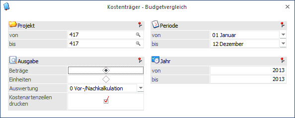
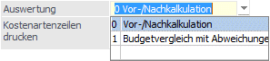
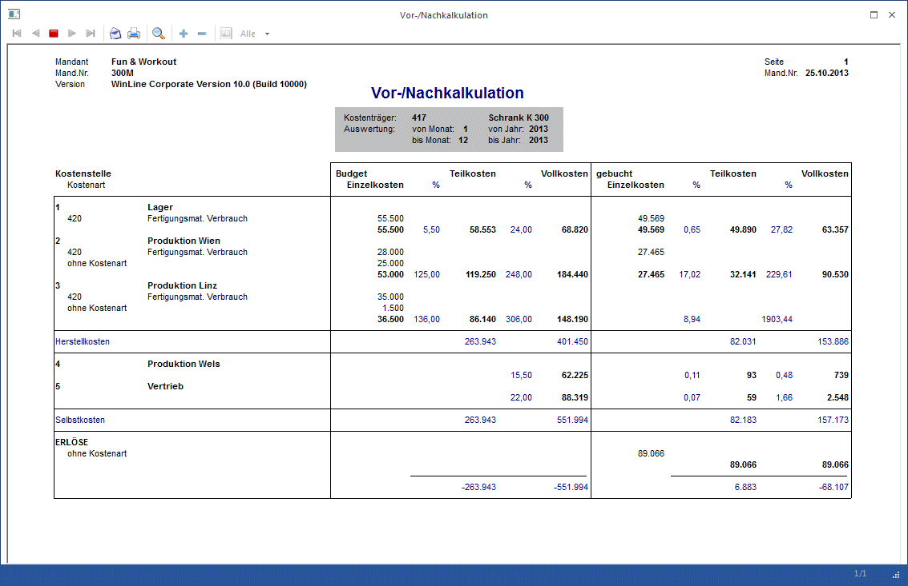
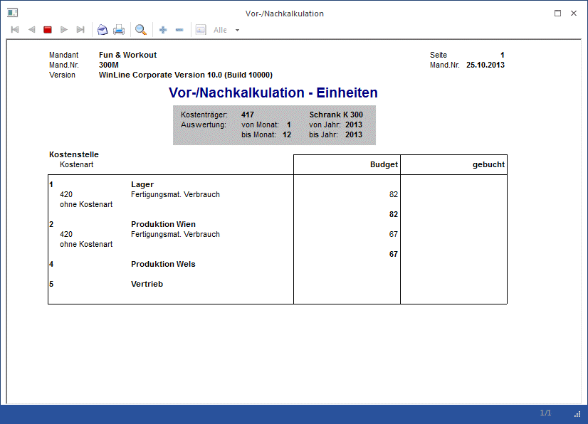
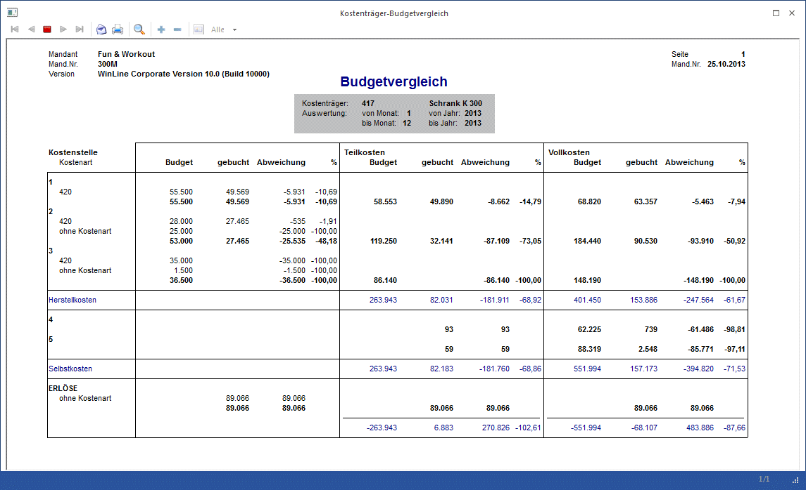
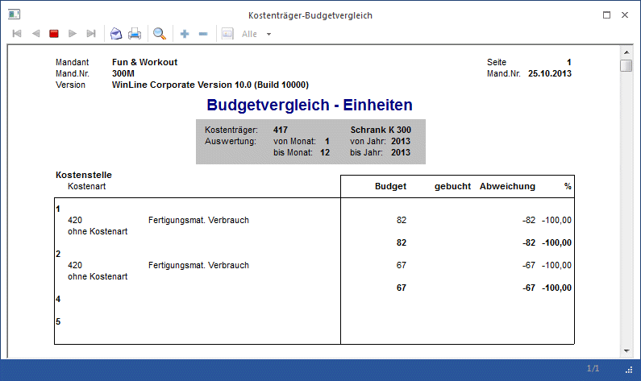

Im Menüpunkt
1 Auswertungen
1 Kostenträger - Budgetvergleich
können für Projekte (Kostenträger) auf Basis von Beträgen oder Einheiten die Auswertungen für die Vor-/ und Nachkalkulation, bzw. ein Budgetvergleich mit einer Abweichungsanalyse abgerufen werden. Bei der Ausgabe auf Basis von Beträgen erhalten Sie die gebuchten Kosten in der traditionellen Vollkostenrechnung und ebenso die Teilkostenrechnung dargestellt. Für die Auswertung der Vor-/ und Nachkalkulation und auch für den Budgetvergleich mit Abweichungen können ergänzend die Kostenartenzeilen angedruckt werden.

Buttons

Ø Ausgabe Bildschirm/Drucker
Die Auswertung kann entweder über den Drucker oder den Bildschirm erfolgen.
Ø Ende
Das Fenster wird geschlossen.
Selektionskriterien
Ø Projekt
Geben Sie an, welche Kostenträgernummern (Projekte) den Ausdruck begrenzen sollen. Dabei wird geprüft, ob der Benutzer die Berechtigung hat (WinLine KORE/Stammdaten/Kostenträger), den eingegebenen Kostenträger zu verwenden.
Ausgabe
Ø Beträge
Vergleichsbasis sind die Beträge.
Ø Einheiten
Auswertebasis sind die Einheiten.
Ø Auswertung
Vor-/Nachkalkulation - hier werden die beiden Auswertungen auf einem Blatt einander gegenübergestellt
Budgetvergleich mit Abweichungen - hier wird das Budget mit den IST-Werten verglichen

Ø Kostenartenzeilen drucken
Bei Aktivierung dieser Option erhalten Sie in der Vor-/Nachkalkulation pro Kostenstelle pro Kostenart Einzelzeilen ausgedruckt.
Ø Periode von - bis
Selektieren Sie die Perioden, die in die Auswertung einbezogen werden sollen. Wird die Auswahl ohne Eingabe übergangen, werden automatisch alle Perioden ausgewertet.
Ø Jahr von - bis
Selektieren Sie das Jahr bzw. die Jahre, die in die Auswertung einbezogen werden sollen. Wird die Auswertung ohne Eingabe übergangen, wird automatisch das aktuelle Jahr vorgeschlagen.
Beispiele Vor-/Nachkalkulation
In der Nachkalkulation werden die tatsächlich angefallenen Kosten für einen Auftrag ermittelt und den geplanten Kosten zu Vollkosten und Teilkosten gegenübergestellt. Dadurch wird eine Kostenkontrolle der einzelnen Aufträge möglich. Diese Auswertung ist auf Basis von Beträgen und Basis der Einheiten (Mengen) möglich. Ergänzend können auch die Kostenartenzeilen pro Kostenstelle gedruckt werden.


Beispiel Budgetvergleich mit Abweichungsanalyse
Im Budgetvergleich sind pro Kostenträger in der Teilkostenrechnung als auch in der Vollkostenrechnung die absolute Abweichung (Beträge) als auch die relative Abweichung (Prozent) gegeben. Die Abweichung betrifft den Unterschied zwischen Plan- und Istwerten.
Die Zuschlagssätze der Teil- und Vollkostenrechnung für die Budgetwerte werden aus dem Kostenstellenstamm herangezogen. Die Zuschlagssätze für die Istkosten werden mit dem Aufruf des Budgetvergleiches neu gerechnet.
ü Budget
Gegenüberstellung der
geplanten Budgetwerten und der Istkosten.
ü Teilkosten
In der
Teilkostenrechnung werden die Kostenträger nur mit den durch sie verursachten
variablen Kosten belastet.
ü Vollkosten
Den einzelnen
Kostenträgern werden die auf sie entfallenden gesamten Kosten zugerechnet. Fixe
und variable Kosten werden dem Kostenträger direkt oder über Schlüsselung
indirekt zugerechnet.

